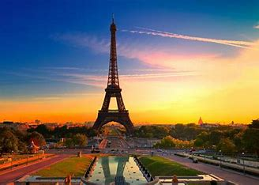
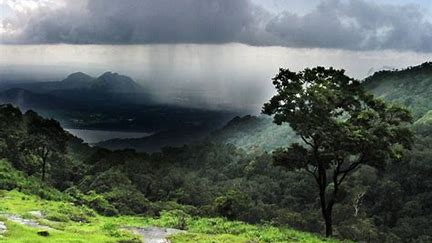
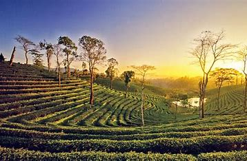
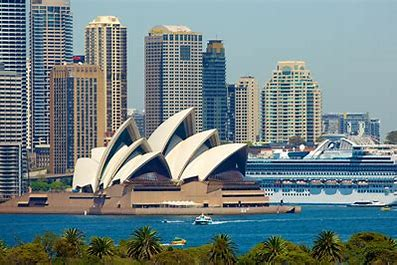
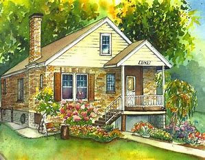
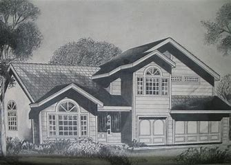

Excited to travel somewhere in vacation?
Discover the world via "SLOW
TRAVEL"
Thinking to waste your time for travelling?
Here are some amazing tourist places that you should never miss visiting. One of the greatest joys of travel lies in the anticipation leading up to your departure. From meticulously planning your itinerary to eagerly packing your suitcase, the mere thought of stepping out into the unknown fills your heart with pure happiness. Each journey holds the promise of uncovering hidden treasures, both within the world and within yourself. The memories forged during these expeditions become the precious souvenirs that you carry with you, forever imprinted on your soul, reminding you that life is an extraordinary adventure meant to be savored.

Paris Known as the "City of Love" and the epitome of elegance, Paris captivates visitors with its romantic
ambiance and iconic landmarks. From the awe-inspiring Eiffel Tower to the magnificent Louvre Museum, Paris
offers a blend of history, art, and exquisite cuisine. Stroll along the charming streets of Montmartre, indulge
in delectable pastries at local patisseries, and cruise along the Seine River for a truly enchanting experience.
Here is the link for bookin hotel rooms in Paris!!

If you are a nature lover then get a 1 week holiday to enjoy the beauty of Kerala.
Nestled in the southwestern corner of India, Kerala is a captivating land of unparalleled natural beauty. With
its verdant landscapes, idyllic backwaters, and pristine beaches, this enchanting state offers a sensory feast
for the soul. The lush tea plantations of Munnar, carpeted hills of Wayanad, and tranquil backwaters of Alleppey
weave a tapestry of serene vistas that beckon travelers to immerse themselves in nature's embrace.
This linkmaps kerala.

Assam, located in Northeast India, is a land of breathtaking natural beauty and cultural diversity. Known for
its vast tea plantations, Assam offers a unique travel experience that includes wildlife sanctuaries, ancient
temples, and bustling markets. The mighty Brahmaputra River, which flows through the state, adds to its
picturesque charm. Assam is also home to the famous Kaziranga National Park, a UNESCO World Heritage Site, and
the one-horned rhinoceros. The state's rich cultural and geographical heritage is reflected in the Bihu
festival, a colorful celebration of the harvest, and Majuli, the world's largest river island.

The vibrant city, of Sydney, is a place for all. It is full of sophisticated spots like the iconic Opera Houses,
inviting beaches, and trendy areas like The Rocks and Darling Harbor. The people of Sydney are known for their
fashion-forward attire, British-style sarcasm accompanied by an easy-going attitude.


This may be awkward but yeah!!!!
Whenever you get free don't be reserved at your job rented houses but go to your home once this is the place
where you bought up and this is the place which is responsible for whom you are now. Don't forget to visit your
home town for every 2-3 months and every month if possible.